1.1.1 Таб Лица
В този таб се визуализира информация за лицата в делото, техните качества и период на валидност:
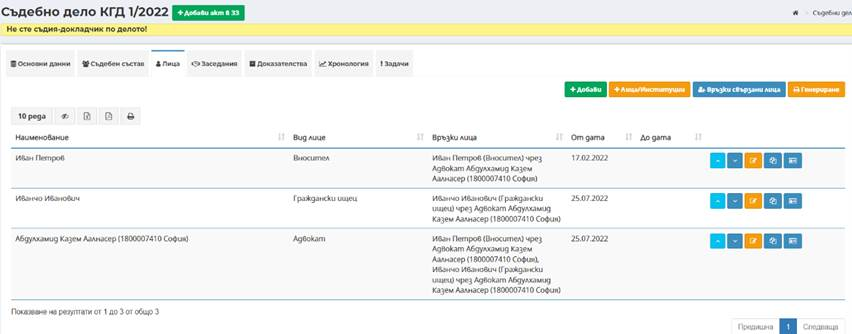
1.1.1.1 Бутон Добави
Чрез бутон Добави
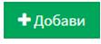
може да се добави лице към делото. Зарежда се екран за въвеждане на данни за лицето и вида на лицето:
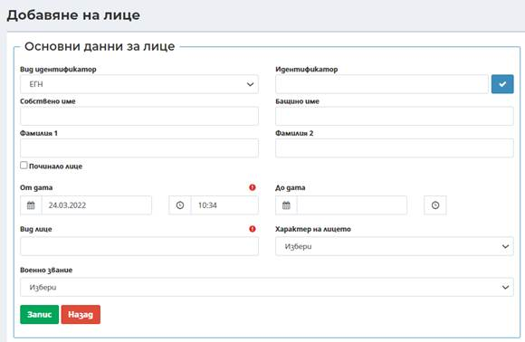
- Вид на идентификатор – избира се вида на идентификатора от номенклатура, в зависимост от типа лицето;
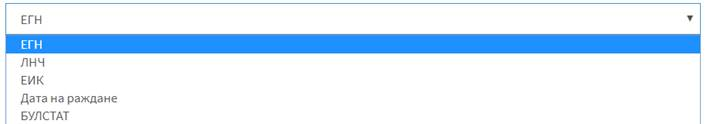
- Идентификатор – в зависимост от избрания вид на идентификатора се въвеждат данни за него;
Чрез бутон Провери се прави проверка на въведения идентификатор в НБД „Население“, ТРРЮЛНЦ или регистър БУЛСТАТ в съответствие с избрания идентификатор и въведените данни в поле Идентификатор. Данните, които се визуализират от направената проверка, могат да бъдат използвани и заредени в съответните полета на екранната форма, посредством бутона Избери.
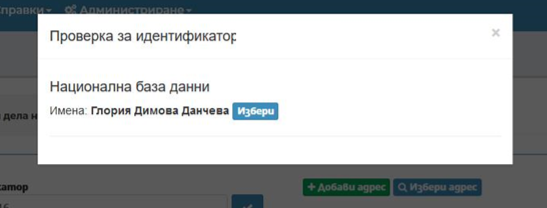
- Имена за ФЛ и/или наименование за ЮЛ – въвеждат се в съответните полета, които се променят в зависимост от избрания вид идентификатор: Собствено име, Бащино име, Фамилия, Фамилия 2 за физически лица; Наименование на юридически лица;
- Вид лице – полето е задължително, като чрез въвеждане на минимум три символа се избира вида на лицето по отношение на документа или съдебното производство от номенклатура;
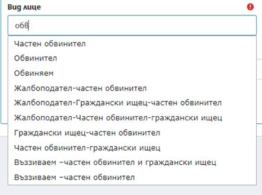
- Характер на лицето – полето не е задължително, но при въведен идентификатор ЕГН се изчислява възрастта на лицето и автоматично се попълва стойност на полето (пълнолетен/непълнолетен/малолетен), която може да се промени от потребител.
- Починало лице – системата дава възможност за избор на тази опция при необходимост. При регистриране на входящ документ (иницииращ документ) и в случай че данни от НБД оказват, че лицето е починало, чек бокса се маркира автоматично. Добавеното ново поле за дата на смърт се попълва автоматично.
- Системата дава информация за починало лице посредством показания по-долу индикатор“
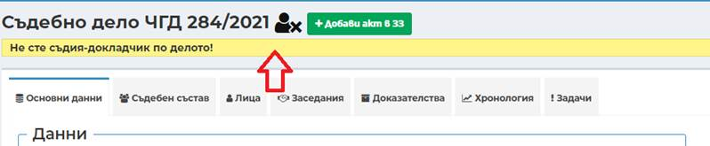
След въвеждане на всички изискуеми данни и избор на бутон Запис
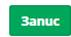
успешно се добавя ново лице.
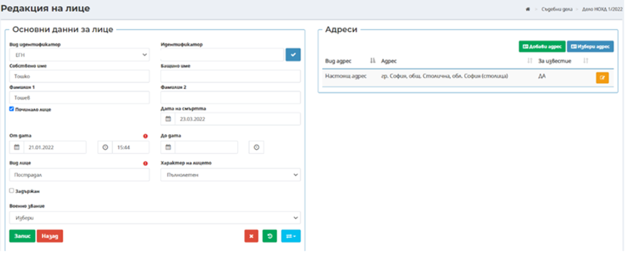
- Информация за „починало лице“ се визулизира и в списъка с лица по делото, като индикатора е в началото на самия ред.
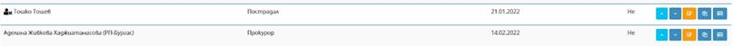
В дясната част на екрана се визуализира секция Адреси, в която могат да бъдат въведени данни за адресът/ите за съответното физическо и/или юридическо лице, посредством бутони: Добави адрес, Избери адрес.
o Добави адрес
Нов адрес за съответното лице се въвежда при избор на бутон Добави адрес
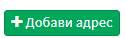
като се зареждат полета в следният екран:
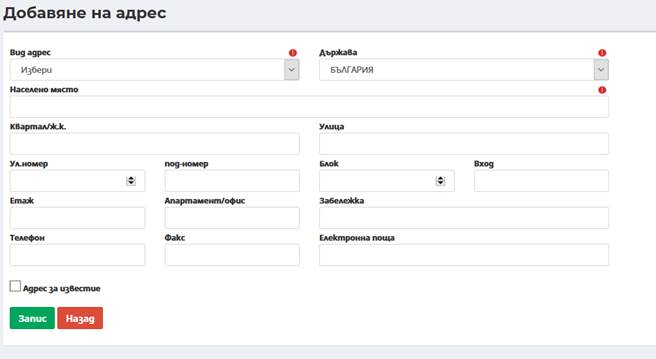
Забележка: Въвеждат се данните за адрес, като задължително трябва да се въведат вид адрес, държава и населено място.
- Вид адрес – избор на вид на адрес от номенклатура:
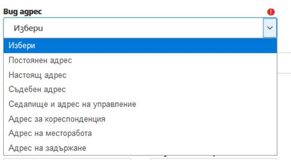
- Държава – избор от номенклатура за конкретната държава за лицето, като по подразбиране в полето е заредено България;
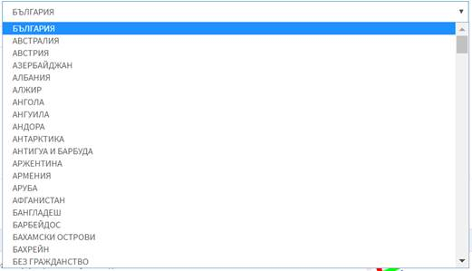
- Населено място – чрез автоматично попълване след търсене по част от името (въвеждат се минимум три букви от населеното място) и се предлага потребителя да избере съответното населено място;
- Квартал/ж.к. – чрез автоматично попълване след търсене по част от името (въвеждат се минимум три букви от квартал/ж.к.);
- Улица - чрез автоматично попълване след търсене по част от името (въвеждат се минимум три букви от наименованието на улица);
- Ул. номер – въвежда се номера на улицата;
- Под-номер - въвежда се под-номера на улицата;
- Блок – въвежда се номер на блок;
- Вход - въвежда се номер на вход;
- Етаж - въвеждат се данни за етаж;
- Апартамент/офис - въвеждат се данни за апартамент/офис;
- Забележка – при необходимост може да се въведе допълнителна информация;
- Телефон – въвежда се стационарен телефон или мобилен номер;
- Факс - въвежда се номер на факс;
- Електронна поща – въвежда се електронна поща на лицето.
Забележка: Адрес в друга държава – в свободно текстово поле се въвежда адрес.
o Избери адрес – системата дава възможност да се преизползват адреси на лица, които вече са били въвеждани в ЕИСС.
След въвеждане на данни за лице и при избор на бутон Избери адрес се зарежда следният екран за избор на адрес на лице:
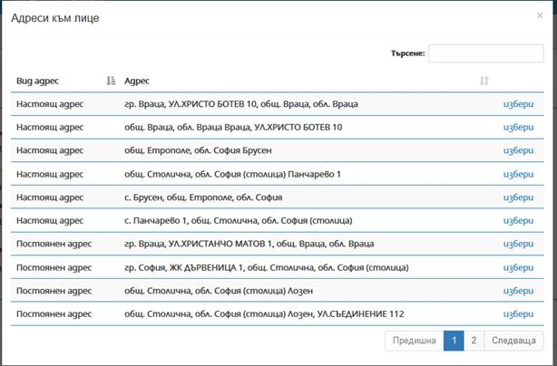
С бутон Избери се зарежда съответния адрес за лицето, като актуален адрес по делото.
Важно! Системата позволява деактивиране на адрес, посредством бутон , в случай че няма изготвени призовки/уведомления/съобщения за този адрес.
1.1.1.2 Бутон Лица/институции
Бутонът се използва за избор на институции вече въведени в ЕИСС.
При избор на бутон Лица/институции се зарежда следният екран за избор на служебни лица и/или институция:
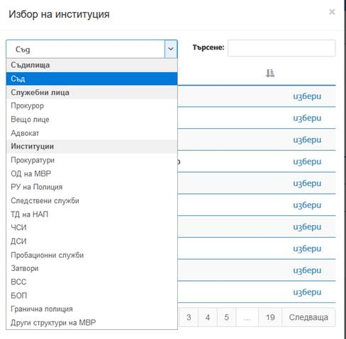
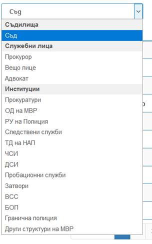
Бутон Лица/институции е активен на екрана за добавяне на данни за повече от едно лице или институция.
При избор на институция, системата автоматично зарежда Седалище и адрес на управление предварително въведени в номенклатурата на институциите. При необходимост системата дава възможност за добавяне/избор на друг адрес, посредством бутоните Добави адрес и Избери адрес, аналогично на функционалността за физически/юридически лица.
Забележка: След добавяне на ново лице, за да въведете адрес на лицето използвате бутон Добави адрес.
Редакция на адрес на лице/институция става посредством избор на бутон Редакция
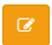
на реда на съответния адрес на лицето/институцията. Екранът за редакция съдържа аналогични полета като тези при въвеждане.
1.1.1.3 Бутон Връзки свързани лица
Посредством избор на бутон Връзки свързани лица  може
да се прегледат и да се създадат нови връзки между лицата по делото.
може
да се прегледат и да се създадат нови връзки между лицата по делото.
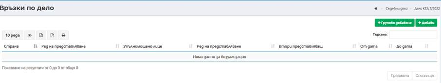
Създаването на нова връзка става посредством избор на бутон Добави.
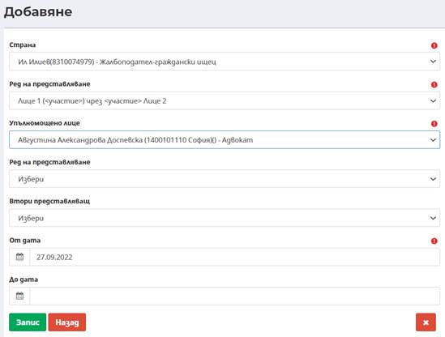
- Страна – избор от въведените страни по делото;
- Ред на представляване – избира се връзка между лица (начин на представляване);
- Упълномощено лице – избор от въведените страни по делото;
- Ред на представляване – избира се следваща по ред връзка на представляване;
- Втори представляващ – избор от въведените страни по делото;
- От дата – начална дата на валидност на връзките между страните;
- До дата – крайна дата на валидност на връзките между страните. Полето не е със задължителен характер.
След въвеждане на всички изискуеми данни и избор на бутон Запис
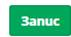
успешно се добавя нова връзка между страните.
Важно!
В случай, че е необходимо създадена връзка да бъде
премахната, системата го позволява посредством избор на бутон Премахване
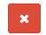
Забележка: При създаване на връзки между страните са заложено ограничения според възможните процесуални качества на страните и възможните връзки между тях.
Редакция на връзки става посредством избор на бутон Редакция
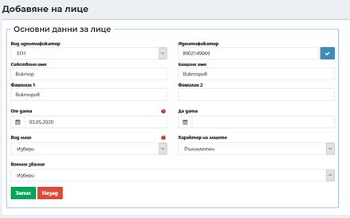
на реда на съответната връзка. Екранът за редакция съдържа аналогични полета като тези при въвеждане.Посредством избор на бутон Групово добавяне , системата позволява създаване на няколко връзки едновременно (пример: ако един адвокат трябва да представи всички ищци по делото).
При избора на тази опция се отваря следния прозорец:
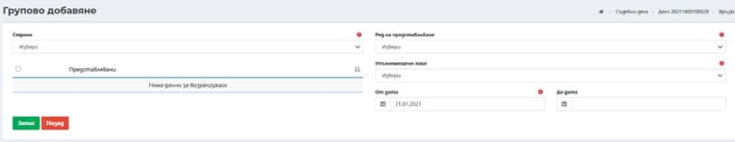
- Страна – избор от въведените страни по делото;
- Ред на представляване – избира се връзка между лица (начин на представляване);
- Упълномощено лице – избор от въведените страни по делото;
- От дата – начална дата на валидност на връзките между страните;
- До дата – крайна дата на валидност на връзките между страните. Полето няма задължителен характер.
1.1.1.4 Бутон Редакция на лице
Редакция на лице/институция става посредством избор на бутон Редакция на реда на съответното лице/институцията. Екранът за редакция съдържа аналогични полета като тези при въвеждане.
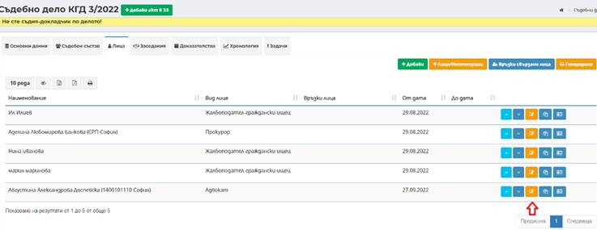
1.1.1.5 Бутон Създай като
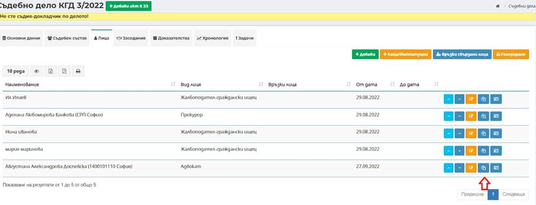
Посредством избор на бутон Създай като на реда на всяко едно лице в списъка с лица в таб Лица има възможност за създаване на лице с различно участие – процесуално качество в делото. След избор на бутона към съответното лице се отваря екран с копирани данни на лицето.
Необходимо е да бъде избрано ново качество на лицето посредством избор от падащия списък с номенклатура в поле Вид лице. При необходимост може да се променят От дата и До дата за участие в делото.
След въвеждане на всички изискуеми данни и избор на бутон
Запис успешно се добавя ново лице.
успешно се добавя ново лице.
1.1.1.6 Бутон Лични документи
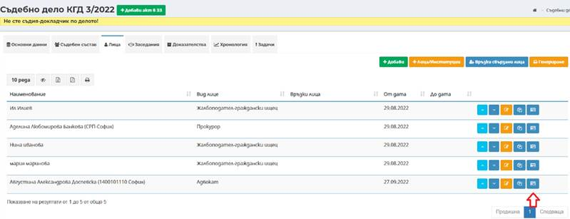
Посредством избор на бутон Лични документи има възможност за въвеждане на лични документи на лице.
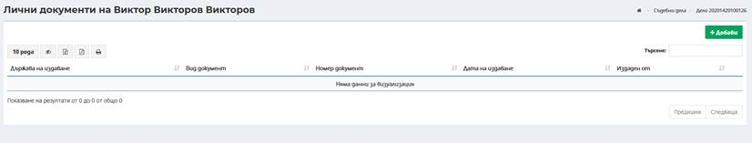
Посредством избор на бутон Лични документ за конкретно лице се въвеждат необходимите данни:
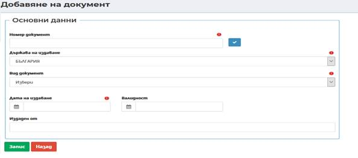
- Номер на документ – въвежда се номер на личен документ на лице;
- Държава на издаване – избор на държава на издаване на личния документ на лице;
- Вид на документа – избира се от падащ с номенклатура;
- Дата на издаване – избира се дата на издаване на личен документ;
- Издаден от – въвежда се институция издала документа за самоличност.
След въвеждане на всички изискуеми данни и избор на бутон Запис успешно се добавя нов личен документ към лице.
Посредством въвеждане на номер на документ и наличен идентификатор ЕГН или ЛНЧ на лицето в делото има възможност за проверка в АИС „Български документи за самоличност“. Проверката става след въвеждане на номер на документ и избор на бутон Провери
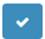
.
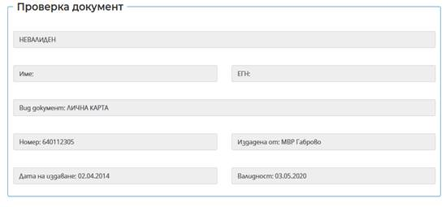
Забележка: На едно лице може да бъдат добавени повече от един вид документ за самоличност.
Редакция на лични документи става посредством избор на бутон Редакция на реда на съответния документ.
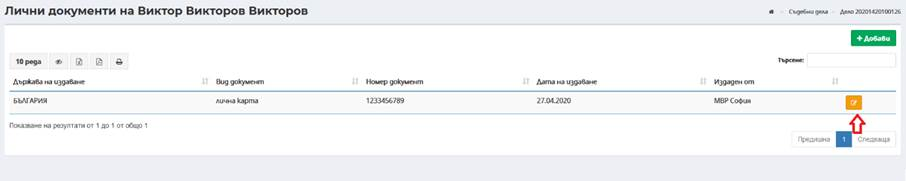
Екранът за редакция съдържа аналогични полета като тези при въвеждане.
1.1.1.7 Бутон Присъди
Посредством бутон Присъди към лице с качество Обвиняем и Нарушител (Активен само за ответни страни по наказателни дела) има възможност за въвеждане на присъда по НД към страна по делото:
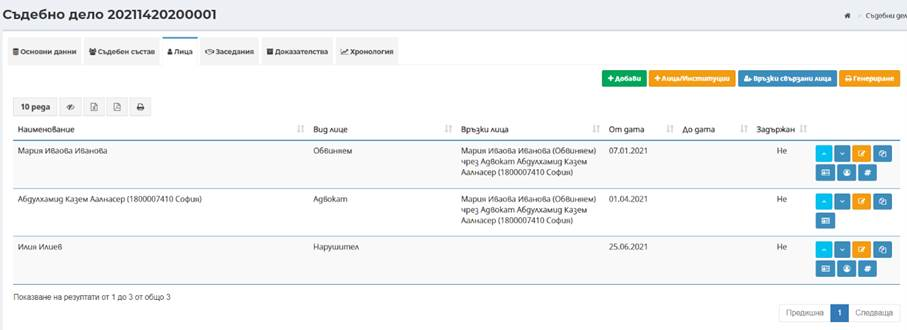
От реда на съответното лице в таб Лица се избира бутон Присъди.
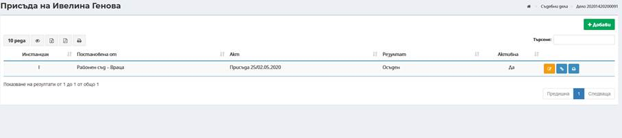
Ø Въвеждане на индивидуална присъда
За добавяне на нов индивидуална присъда към лице се избира бутон
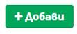
. Въвеждат се необходимите данни за присъдата:
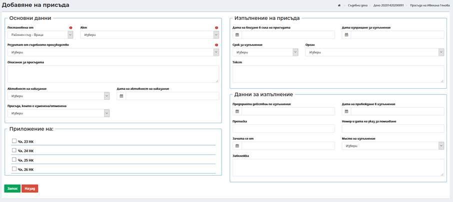
Ø Секция Основни данни:
- Постановено от – избор на съд постановил присъдата, По подразбиране е избран текущия съд с възможност за промяна при наличие на резултат от инстанционна проверка и произнасяне по постановената от текущия съд присъда;
- Акт – избира се акта на съда, с който е постановена (изменена) присъдата;
- Резултат от съдебното производство – избира се резултат от съдебното производство;
- Описание за присъдата – изтегля се диспозитива от избраната присъда, с възможност за редакция и изтриване на ненужното (при наличие на повече от един подсъдим има възможност за изрязване на частта от диспозитива, касаеща другите лица);
- Активност на наказание – избира се от падащ списък с номенклатура;
- Дата на активност на наказание – от кога е активно наказанието по присъдата;
- Присъда, която е изменена/отменена – избор на присъда, която се изменя/отменя при резултат от инстанционна проверка (въвежда се само при промяна/отмяна на първоначално постановена присъда);
- Приложение на – законовото основание за прилагане.
След попълване на изискуемите данни се избира бутон Запис, с което присъдата е успешно въведена.
Забележка: В случай, че има промяна на присъдата от инстанционна проверка промяната на присъдата се въвежда като нов запис.
Забележка: След влизане в сила на присъдата се попълват данните в секция Изпълнение на присъда и Данни за изпълнение.
1.1.1.7.1 Бутон Наказание
След въвеждане на индивидуална присъда от екрана с присъдите се въвежда наказание посредством избор на бутон Наказание .
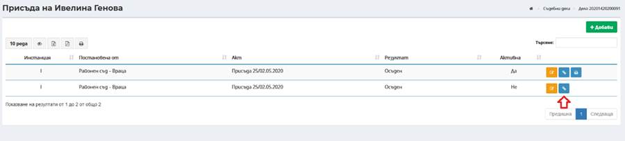
Посредством бутон Наказание има възможност да се създаде наказание към вече записаната присъда. Към една присъда може да се въведат повече от една присъда.
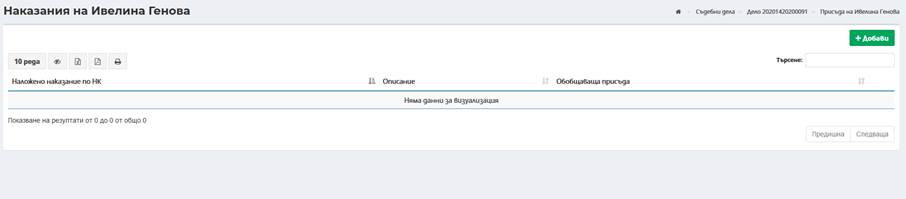
За добавяне на наказание се избира бутон
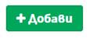
и се въвеждат необходимите данни:
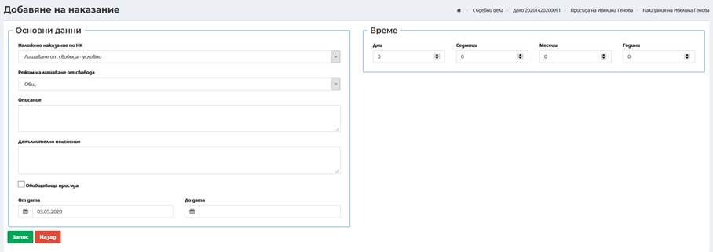
В зависимост от избраното наказание се показва допълнителен екран за въвеждане на период или сума:
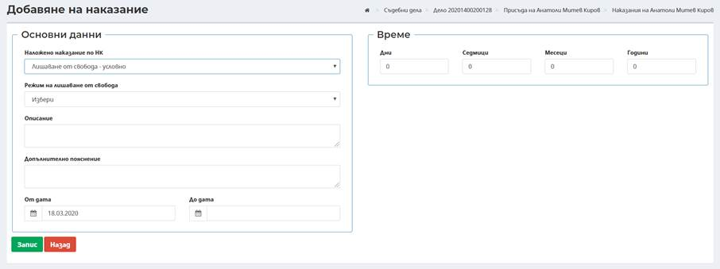
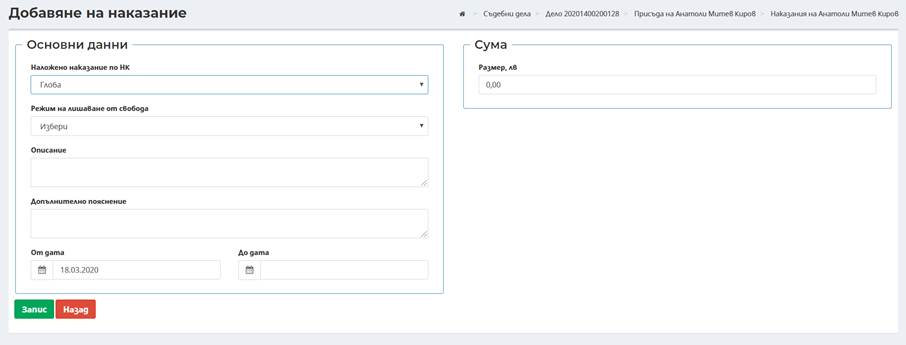
- Режим на лишаване от свобода – избира се от падащ списък от номенклатура вида на лишаване;
- Описание – въвежда се допълнителна информация при необходимост. Полето не е със задължителен характер;
- Допълнително пояснение - въвежда се допълнително пояснение, ако е необходимо;
- От дата – дата, от която наказанието е активно;
- До дата – дата се въвежда след като даденото наказание вече не е активно в следствие на инстанционна проверка. Въвежда се ново наказание, което да съответства на дистанционната проверка.
- Обобщаваща присъда – маркира се чекбокс в случай, че въведеното наказание е обобщаващо за всички наложени наказания по присъдата.
След попълване на изискуемите данни се избира бутон Запис, с което наказанието е успешно въведено.
1.1.1.7.2 Бутон Участие
възможност за въвеждане на участие на лицето в престъплението.
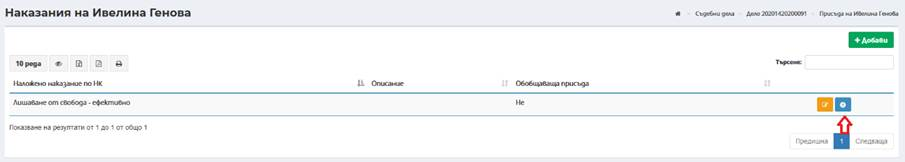
На всяко наказание трябва да се въведе поне едно участие чрез бутон . Визуализира се екран с участия:
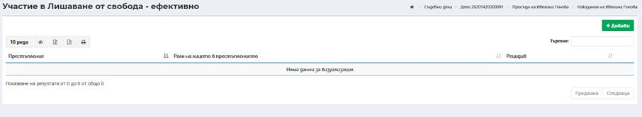
Добавяне на участие става посредством избор на бутон Добави
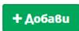
и въвеждане на необходимите данни:
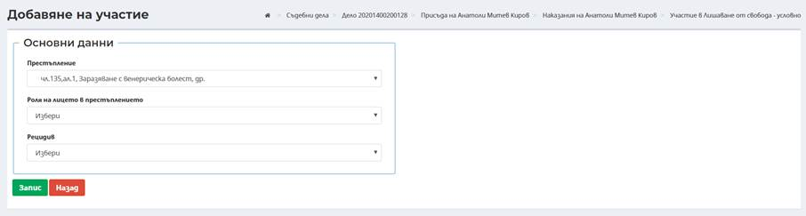
- Престъпление – избор от въведените по делото престъпления;
- Роля на лицето в престъплението – избор от падащ списък с номенклатура;
- Рецидив – избор от падащ списък от номенклатура.
След попълване на изискуемите данни се избира бутон Запис, с което участието в престъплението на лицето е успешно въведено.
Забележка: След влизане в сила на присъдата се изготвя бюлетин за съдимост и се въвеждат данни за изпълнение на присъдата в секции „Изпълнение на присъда“ и „Данни за изпълнение“.
1.1.1.7.3 Бутон Бюлетин за съдимост
Посредством бутон Бюлетин за съдимост  има
възможност да се създаде Бюлетин за съдимост за лицето по образец по влязла в
сила присъда. Въвеждат се необходимите данни за изготвяне на бюлетина:
има
възможност да се създаде Бюлетин за съдимост за лицето по образец по влязла в
сила присъда. Въвеждат се необходимите данни за изготвяне на бюлетина:
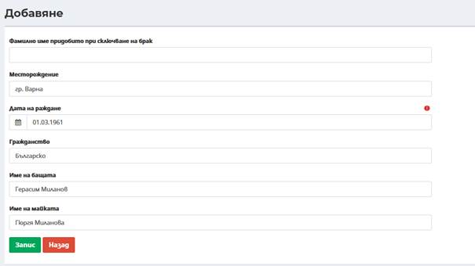
- Фамилно име придобито при сключване на брак (приложимо само за жени) – въвежда се фамилното име на лицето, при наличие на сключен граждански брак и промяна на фамилното име. Полето не е със задължителен характер;
- Месторождение – въвежда се месторождение на лицето;
- Дата на раждане – автоматично се въвежда от въведения идентификатор на лицето в делото;
- Гражданство – въвежда се гражданство на лицето;
- Име на бащата – въвеждат се имената на бащата;
- Име на майката – въвеждат се имената на майката.
След въвеждане на всички изискуеми данни и избор на бутон Запис
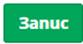
успешно се записват данните за бюлетина за съдимост за лицето. Генерираният Бюлетин за съдимост може да бъде прегледан посредством избор на хиперлинка към документа в секция Файлове.
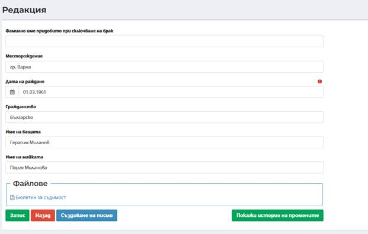
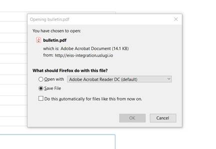
Генерираният файл може да бъде записан локално на компютъра на потребителя или да бъде отворен за преглед. След отваряне се визуализира изготвения Бюлетин за съдимост по образец.
Посредством избор на бутон Създаване на писмо има възможност за изготвяне на писмо за изпращане на Бюлетин за съдимост от Бюра съдимост.
Има възможност изготвяне и регистриране на изходящо писмо чрез попълване на данни:
- Поле Вид документ – избира се от падащ списък вид документ по дела или от обща администрация;
- Поле Основен вид документ – избира се от падащ списък;
- Поле Точен вид документ – в зависимост от избрания основен вид документ се зарежда номенклатура с възможните стойности за точен вид документ;
- Поле Бланка – в зависимост от избрания точен вид документ се зарежда номенклатура с възможните стойности за бланка на документ. Има възможност за създаване на писмо без бланка;
- Поле Автор – автоматично се зарежда потребителя, който изготвя писмото в системата. Има възможност при необходимост да се смени автора на писмото;
- Поле Статус – избира се статус на писмото;
- Поле Описание – въвежда се допълнителна информация при необходимост. Полето не е със задължителен характер.
След избор на бутон Запис се визуализира бутони Изготвяне на документ от където може да се види изготвеното вече писмо и Регистриране на документ.
След избор на бутон Регистриране на документ се преминава към генериране на файл и регистриране на изходящото писмо.
Въвеждане на изпълнение на присъда
Изпълнение на присъда става посредством избор на бутон Присъда на съответното лице и избор на бутон Редакция към съответната присъда, която е влязла в сила.
Визуализира се екран за въвеждане на изпълнение на присъда:
Секция Изпълнение на присъдата
Въвеждат се необходимите данни:
- Дата на влизане в сила на присъдата – избира се дата на влизане в сила на индивидуалната присъда на лицето;
- Дата на изпращане за изпълнение – избира се дата на изпращане на присъдата за изпълнение;
- Срок за изпълнение – избира се срок за изпълнение на присъдата;
- Орган – избор от падащ списък с номенклатура;
- Текст - въвежда се допълнителна информация при необходимост. Полето не е със задължителен характер.
Секция Данни за изпълнение
Въвеждат се необходимите данни:
- Предприети действия по изпълнение – избира се дата на предприемане на действия по изпълнение на присъдата;
- Дата на привеждане в изпълнение – избира се дата на привеждане в изпълнение;
- Преписка – въвежда се преписва във връзка с изпращане на данни привеждане на присъдата в изпълнение;
- Номер и дата на указ за помилване – въвежда в случай, че е приложимо;
- Зачита се от – избира се дата, от която се зачита изпълнението на присъдата;
- Място на изпълнение – избира се от падащ списък с номенклатури на затворите място на излежаване на наказанието.
След попълване на изискуемите данни се избира бутон Запис, с което изпълнението на присъдата е успешно въведено.
Важно!
В случаите, когато второинстанционния съд измени/отмени присъда и делото се върне през бутон Движение в първоинстанционния съд следва да се отрази обжалването, като стъпките са описани в т. 8.1.4.6.9 Обжалване.
Следващата стъпка е отразяване на присъдата, чрез избор на бутон Присъди в таб Лица. Отваря се екран, в който се визуализира присъдата на първоинстанционния съд. През бутон Добави следва да се отрази и присъдата на второинстанционния съд, като обръщаме внимание на следните полета:
- Постановен от – посредстом падащо меню се избира второинстанционния съд. Полето има задължителен характер;
- Акт – от падащо меню се избира акта на вторинстанционния съд. Полето има задължителен характер;
- Резултат от съдебното производство – избира се съответния резултат, като полето има задължителен характер;
- Присъда, която е изменена/отменена – в това поле следва да се избере присъдата на първоинстанционния съд.
След отразяване на присъдата на второинстанционния съд, в края на реда се визуализира и бутона за изготвяне на бюлетина за съдимост. В изготвения бюлетин автоматично се извлича информация и за двете присъди.
Забележка! В случай че първоинстанционния съд е издал първоначално бюлетин за съдимост, при изготвяне на втори бюлетин за изменената/отменена присъда, промяната няма да бъде отразена автоматично.
1.1.1.8 Бутон Мерки
Посредством бутон Мерки към лице (Активен само за ответни страни по наказателни дела) има възможност за въвеждане на мерки по НД към страна по делото.
За добавяне на мярка към лице се избира бутон . Въвеждат се необходимите данни за мярка:
- Вид институция – избор от падащ списък на вид институция наложила мярката;
- Институция, определила мярката – избира се чрез въвеждане на минимум три последователни символа и търсене в номенклатурата с институция в зависимост от избрания вид институция;
- Вид мярка – избира се вид мярка от падащ списък с номенклатура;
- Дата на мярка – избира се дата на налагане на мярката;
- Гаранция, евро – въвежда се сума в случай на налагане на мярка за парична гаранция;
- Статус – избира се от падащ списък с номенклатура.
След попълване на изискуемите данни се избира бутон Запис, с което мярката е успешно въведено.
1.1.1.9 Бутон Наследство
Бутон Наследство се визуализира за всяко лице въведено с качество "Наследник", „Молител“ и „Заявител“ на Таб Лица по дело ЧГД (образувано от входящ иницииращ документ Молба, Точен вид документ - Молба за приемане на наследство, Молба по чл. 51 от Закона за наследството, Молба за отказ от наследство, Молба за опис насл./връщане на дете). Чрез бутона се вписва резултата за всеки наследник.
За добавяне на данни за наследство към лице се избира бутон . Въвеждат се необходимите данни за наследство:
- Акт – Избира се акт/протокол от заседание, който е постановен резултат за приемане или отказ от наследство;
- Резултат – възможност за избор от номенклатура: приемане на наследството, отказ от наследство, загубено право на наследство;
- Активна – маркиране на активен резултат за приемане или отказ от наследство.
След попълване на изискуемите данни се избира бутон Запис , с което мярката е успешно въведено.